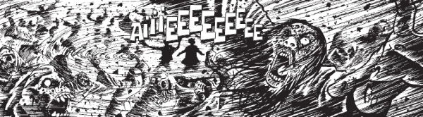

An anthology series featuring paradoxical calamaties, that begs the question of what was wrong with Time Twisters? On the plus side, this did serve as the launching pad for Dandridge.
An anthology series featuring paradoxical calamaties, that begs the question of what was wrong with Time Twisters? On the plus side, this did serve as the launching pad for Dandridge.
Art by Leigh Gallagher
| Story Title | Parts | Pages | w indicates a wraparound coverCovers | Year(s) | Issues | Writer | Artist | Colourist | Letterer |
|---|---|---|---|---|---|---|---|---|---|
| Red Man Rising | 1 | 5 | 0 | 2002 | Reprints: M353 (supplement)1314 | Simon Spurrier | Ian Richardson | [b&w] | Tom Frame |
| Nixon Must Die | 1 | 5 | 0 | 2002 | 1315 | David Bishop | Neil Edwards | [b&w] | Tom Frame |
| Infamy | 1 | 5 | 0 | 2002 | 1316 | Gordon Rennie | Mike Collins (P) Lee Townsend (I)various | [b&w] | Tom Frame |
| Warts 'n All | 1 | 5 | 0 | 2002 | Reprints: M353 (supplement)1317 | Simon Spurrier | David Roach | [b&w] | Ellie de Ville |
| The Red Menace | 1 | 5 | 0 | 2002 | 1318 | Gordon Rennie | Adrian Bamforth (P) Lee Townsend (I)various | [b&w] | Tom Frame |
| Otherworld | 4 | 20 | 0 | 2003 | 1346-1349 | Steve Moore | Cam Smith | [b&w] | Ellie de Ville |
| The Man They Couldn't Hang | 1 | 5 | 0 | 2003 | Reprints: M413 (supplement)1356 | Kek-W | Leigh Gallagher | [b&w] | Ellie de Ville |
| The Great War | 1 | 5 | 0 | 2003 | Reprints: M413 (supplement)1361 | Gary Wilkinson | Leigh Gallagher | [b&w] | Annie Parkhouse |
| Cosmonaut X | 1 | 5 | 0 | 2004 | 1376 | Arthur Wyatt | Laurence Campbell (P) Kris Justice (I)various | [b&w] | Tom Frame |
| Alice's Adventures in Whitechapel | 1 | 5 | 0 | 2004 | 1409 | Stu Taylor | Cam Smith | [b&w] | Ellie de Ville |
Linked to DandridgeAntiques Phantasma | 1 | 5 | 0 | 2009 | 1631 | Alec Worley | Warren Pleece | <-- | Simon Bowland |
| The Hunters | 1 | 5 | 0 | 2010 | 1687 | Robert Murphy | Duane Redhead | [b&w] | Simon Bowland |
| H Battalion | 1 | 4 | 0 | 2012 | 1764 | T.C. Eglington | Warren Pleece | [b&w] | Ellie de Ville |
| Rocket de la Revolucion | 1 | 4 | 0 | 2013 | 1823 | Montynero | Simon Fraser | Gary Caldwell | Simon Bowland |
| Origins | 1 | 4 | 0 | 2013 | 1848 | T.C. Eglington | John Charles | [b&w] | Ellie de Ville |
| year | episodes | pages |
| 1997 | 0 | 0 |
| 1998 | 0 | 0 |
| 1999 | 0 | 0 |
| 2000 | 0 | 0 |
| 2001 | 0 | 0 |
| 2002 | 5 | 25 |
| 2003 | 6 | 30 |
| 2004 | 2 | 10 |
| 2005 | 0 | 0 |
| 2006 | 0 | 0 |
| 2007 | 0 | 0 |
| 2008 | 0 | 0 |
| 2009 | 1 | 5 |
| 2010 | 1 | 5 |
| 2011 | 0 | 0 |
| 2012 | 1 | 4 |
| 2013 | 2 | 8 |
| 2014 | 0 | 0 |
| 2015 | 0 | 0 |
| 2016 | 0 | 0 |
| 2017 | 0 | 0 |
| 2018 | 0 | 0 |